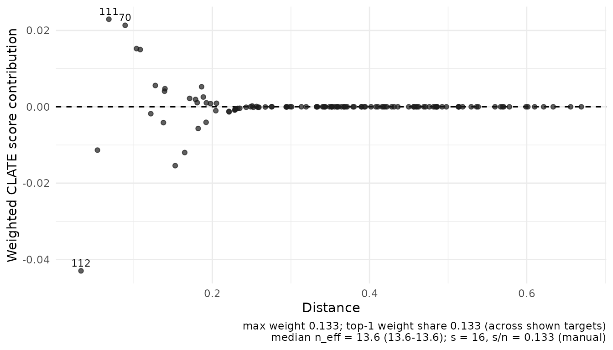
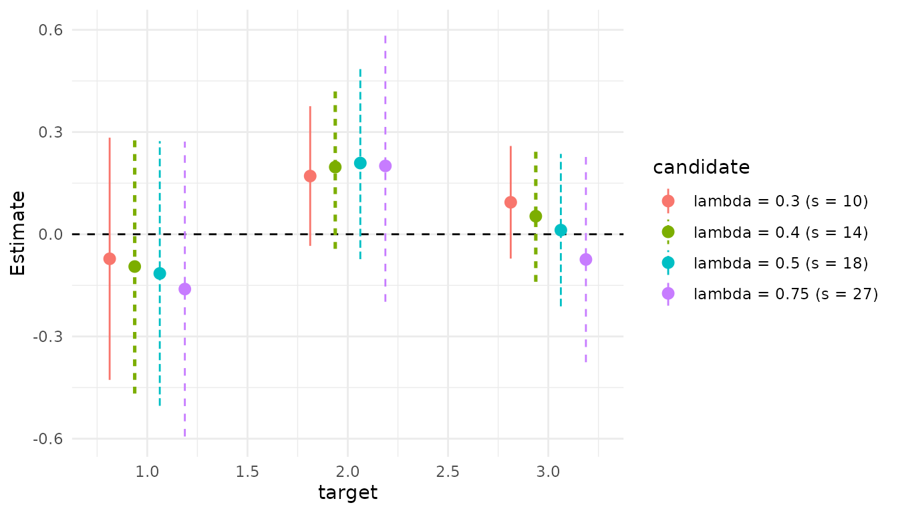
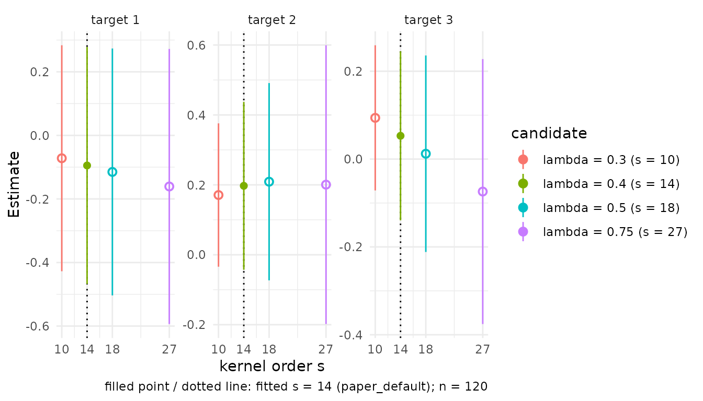

Conditional LATE from supplied nuisance predictions
Source:vignettes/conditional-late.Rmd
conditional-late.Rmdclate_dnn() estimates a conditional local average
treatment effect from externally supplied nuisance predictions. This
supported workflow uses a binary instrument A and binary
treatment D. For example, an encouragement may change
participation without determining it perfectly. Under the IV
assumptions, the target is the effect among people whose treatment
changes with encouragement, conditional on a reporting profile.
The full adjustment vector contains the pre-instrument covariates needed for instrument exogeneity. Reporting uses only . The effect therefore averages over the distribution of the additional controls at each reporting profile, with compliance weights. It generally differs from population CATE.
Causal interpretation requires consistency, exclusion, conditional instrument independence given , monotonicity, instrument overlap and positive local compliance. Without those causal assumptions, the calculation estimates a standardized observed-data Wald functional wherever its denominator is nonzero. Predictions alone do not verify identification.
An example with known nuisance functions
clate_demo_data() generates a bounded model with
endogenous treatment, a conditionally valid instrument and known
nuisance functions. The latent compliance rank also affects untreated
outcomes. Its default data frame contains observed variables and
explicitly labelled oracle prediction columns; latent variables are
available only with keep_latent = TRUE.
demo <- clate_demo_data(n = 120, seed = 20261017, heterogeneous = TRUE)
d <- demo$data
X <- as.matrix(d[c("X1", "X2")])
targets <- rbind(c(.25, .25), c(.5, .5), c(.75, .75))
data.frame(targets,
CLATE = demo$truth$theta(targets), CATE = demo$truth$cate(targets))
#> X1 X2 CLATE CATE
#> 1 0.25 0.25 0.06542969 0.0625
#> 2 0.50 0.50 0.12792969 0.1250
#> 3 0.75 0.75 0.19042969 0.1875With heterogeneous = TRUE, CLATE exceeds CATE by
.
The default model instead has the same treatment effect for everyone at
a given
,
so the targets coincide. Neither model turns a single draw’s confidence
interval into evidence of repeated-sampling coverage.
The five prediction vectors have the following roles:
| Argument | Function evaluated at each observed |
|---|---|
e |
, instrument propensity |
m_y0, m_y1
|
, |
m_d0, m_d1
|
, |
Arm indices refer to the instrument. The outcome regressions do not
condition on participation as an extra control. In an application,
supply aligned predictions from the chosen learning procedure. One
full-sample nuisance state can contain five fitted regressions. The
training label records their provenance; it does not train
or validate them.
Matrix inputs and the two augmented signals
fit <- clate_dnn(
X = X, X0 = targets, Y = d$Y, D = d$D, A = d$A,
e = d$e_oracle, m_y0 = d$m_y0_oracle, m_y1 = d$m_y1_oracle,
m_d0 = d$m_d0_oracle, m_d1 = d$m_d1_oracle,
s = 16L, training = "oracle", row_ids = d$row_id,
return = c("W", "dx", "nuisance")
)The wrapper constructs the augmented contrast for each response :
It then solves the affine equation . The result is a ratio of weighted averages, with common weights for both signals. Do not average observation-level signal ratios.
The constructor and generic ratio engine are also available separately:
signals <- iv_augmented_signals(
Y = d$Y, D = d$D, A = d$A, e = d$e_oracle,
m_y0 = d$m_y0_oracle, m_y1 = d$m_y1_oracle,
m_d0 = d$m_d0_oracle, m_d1 = d$m_d1_oracle,
row_ids = d$row_id, training = "oracle"
)
ratio <- affine_ratio_dnn(
X = X, X0 = targets, numerator = signals$phi_y, denominator = signals$phi_d,
s = 16L, row_ids = signals$row_ids
)
stopifnot(isTRUE(all.equal(ratio$theta, fit$theta)),
isTRUE(all.equal(ratio$theta_vcov, fit$theta_vcov)))Both high-level estimators use the same weighting controls as
cate_dnn() and np_dnn():
method = "exact" or "asymp",
1 <= k <= s, and normalize for
asymptotic weights. Exact DNN and k = 1L are the defaults.
Supply a deterministic integer s, or an existing tuning
specification. Without either, the package’s paper-default rule resolves
the order. Covariance requires s < n. The same order and
weight rule are used after every deletion and retained by
predict() and diagnostics(). CATE and CLATE
expose single-scale DNN only; the two-scale np_tdnn()
regression method has no corresponding justification here.
For example, the generic composition can use asymptotic DNN while retaining the default single neighbor per subsample:
approximate <- affine_ratio_dnn(
X = X, X0 = targets, numerator = signals$phi_y, denominator = signals$phi_d,
s = 16L, method = "asymp", k = 1L, normalize = TRUE
)
summary(approximate)$coefficients
#> estimate std.error statistic p.value conf.low conf.high
#> target_1 -0.10497893 0.1940726 -0.5409261 0.5885585 -0.48535418 0.2753963
#> target_2 0.20472288 0.1326690 1.5431097 0.1228042 -0.05530365 0.4647494
#> target_3 0.03246375 0.1059318 0.3064590 0.7592552 -0.17515872 0.2400862Availability of a weighting option is a computational contract. Statistical validity still requires the localization, bias and nuisance conditions for that choice; it does not extend an exact, single-neighbor theorem automatically.
Data frames and tibbles
Select all columns explicitly. Tibbles follow the same data-frame path; there is no formula interface or implicit column guessing.
estimate_from_table <- function(data) {
clate_dnn(
data = data, x_cols = c("X1", "X2"), X0 = targets,
y_col = "Y", d_col = "D", a_col = "A", e_col = "e_oracle",
m_y0_col = "m_y0_oracle", m_y1_col = "m_y1_oracle",
m_d0_col = "m_d0_oracle", m_d1_col = "m_d1_oracle",
s = 16L, training = "oracle", row_ids = data$row_id
)
}
table_fit <- estimate_from_table(d)
stopifnot(isTRUE(all.equal(table_fit$theta, fit$theta)),
isTRUE(all.equal(table_fit$component_vcov, fit$component_vcov)))
if (requireNamespace("tibble", quietly = TRUE)) {
tibble_fit <- estimate_from_table(tibble::as_tibble(d))
stopifnot(isTRUE(all.equal(tibble_fit$theta, fit$theta)))
}Every observation and prediction vector must be finite and aligned in the same row order. Row IDs must be unique, finite/nonmissing numeric or nonempty character values. IDs document alignment; the wrapper cannot detect a separately permuted prediction vector supplied without its own row map. Align external predictions before passing them.
Instrument propensities must lie in [0,1] and are
clipped to [clip,1-clip]; the default is
clip = 1e-8. Raw and used propensities are retained by the
constructor. Treatment predictions must lie in [0,1];
outcome predictions are finite but not automatically capped. Clipping a
propensity does not establish overlap, and clipping predictions does not
bound an unbounded observed outcome.
Report components with the ratio
report <- summary(fit)
knitr::kable(report$coefficients, digits = 4, caption = "Conditional ratio and pointwise inference")| estimate | std.error | statistic | p.value | conf.low | conf.high | |
|---|---|---|---|---|---|---|
| target_1 | -0.1104 | 0.1964 | -0.5622 | 0.5740 | -0.4953 | 0.2745 |
| target_2 | 0.2079 | 0.1388 | 1.4976 | 0.1342 | -0.0642 | 0.4800 |
| target_3 | 0.0212 | 0.1105 | 0.1921 | 0.8477 | -0.1954 | 0.2379 |
knitr::kable(report$components, digits = 4, caption = "Reduced form and first stage")| target_id | numerator | denominator | numerator_se | denominator_se | neff |
|---|---|---|---|---|---|
| 1 | -0.0431 | 0.3900 | 0.0654 | 0.2493 | 13.621 |
| 2 | 0.1039 | 0.4999 | 0.0974 | 0.2831 | 13.621 |
| 3 | 0.0144 | 0.6780 | 0.0776 | 0.2056 | 13.621 |
knitr::kable(report$status, caption = "Computation status by target")| target_id | ratio_status | negative_denominator | near_zero_denominator | covariance_status | wald_available |
|---|---|---|---|---|---|
| 1 | ok | FALSE | FALSE | ok | TRUE |
| 2 | ok | FALSE | FALSE | ok | TRUE |
| 3 | ok | FALSE | FALSE | ok | TRUE |
For CLATE, the numerator is the adjusted outcome reduced form and the
denominator is the adjusted treatment first stage.
component_vcov retains their full paired covariance.
vcov(fit) returns ratio variance matrices on the estimator
scale; theta_omega multiplies those matrices by
neff. Do not divide the returned ratio variance by
neff again.
info <- as.data.frame(diagnostics(fit))
fields <- c("target_id", "denominator_se", "denominator_stat",
"instrument_1_mass", "radius_90", "jk_top1_sq_share")
knitr::kable(info[fields], digits = 4, row.names = FALSE,
col.names = c("Target", "First-stage SE", "First-stage stat.",
"Instrument mass", "Radius (90%)", "Largest share"))| Target | First-stage SE | First-stage stat. | Instrument mass | Radius (90%) | Largest share |
|---|---|---|---|---|---|
| target_1 | 0.2493 | 1.5644 | 0.6264 | 0.1954 | 0.2407 |
| target_2 | 0.2831 | 1.7662 | 0.4567 | 0.1807 | 0.5059 |
| target_3 | 0.2056 | 3.2981 | 0.3137 | 0.2115 | 0.3825 |
These diagnostics describe first-stage variation, instrument support,
physical localization and concentration of fitted uncertainty.
neff measures reporting-weight concentration, not the
number of compliers. There is no automatic weak-instrument cutoff or
target filtering.
The same plotting workflow as CATE
The fitted object determines the implementation behind each shared
call. plot_estimates(), plot() and
ggplot2::autoplot() use the same profile, forest and
pointrange styles as CATE. The coefficient extractor
plot_data_estimates() returns the common tidy table, while
summary(fit)$coefficients uses the same six columns as
CATE. Undefined ratios and unavailable Wald bounds remain visible in the
tables.
if (requireNamespace("ggplot2", quietly = TRUE)) {
print(plot_estimates(fit, style = "forest"))
print(plot_overlap(fit, type = "mass"))
print(plot_influence(fit, targets = 2L))
}

#> Ignoring unknown labels:
#> • colour : "target"
The remaining common calls are
plot_weights(fit, type = "profile"),
type = "cumulative" or "kernel",
plot_overlap(fit, type = "propensity"), and
plot_dashboard(fit). Weight and overlap panels require
W; the physical-distance weight view also requires
dx, so retain both as above. Plots require optional
ggplot2. Dashboards use patchwork when installed and otherwise return a
named list of plots. Unavailable panels are omitted or replaced by
diagnostics using the same policy as CATE.
CLATE overlap panels use instrument arms and the
instrument propensity, not treatment uptake. Its influence panel shows
the weighted paired score residual
w * (phi_y - theta * phi_d). These are neither individual
causal effects nor jackknife pseudo-values. The latter are separately
available through return = "pseudo_values".
Tuning sensitivity and candidate views
As for CATE and NP regression, tuning_mode = "grid"
retains the default fit and adds common candidate, estimate and
diagnostic tables. All candidates reuse the same signals and frozen
ranks. This is a sensitivity analysis; it does not select an order or
justify inference after data-dependent selection.
grid_fit <- clate_dnn(
X = X, X0 = targets, Y = d$Y, D = d$D, A = d$A,
e = d$e_oracle, m_y0 = d$m_y0_oracle, m_y1 = d$m_y1_oracle,
m_d0 = d$m_d0_oracle, m_d1 = d$m_d1_oracle,
tuning_mode = "grid", method = "asymp", training = "oracle",
return = c("W", "dx")
)
head(grid_fit$tuning_grid$candidates)
#> candidate_id computed_key is_default feasible reason status lambda s
#> 1 lambda_0p3 s_10 FALSE TRUE ok ok 0.30 10
#> 2 lambda_0p4 s_14 TRUE TRUE ok ok 0.40 14
#> 3 lambda_0p5 s_18 FALSE TRUE ok ok 0.50 18
#> 4 lambda_0p75 s_27 FALSE TRUE ok ok 0.75 27
views <- candidate_fits(grid_fit)
selected <- candidate_fit(grid_fit, 1L)
summary(selected)$coefficients
#> estimate std.error statistic p.value conf.low conf.high
#> target_1 -0.07195888 0.18138100 -0.3967278 0.6915682 -0.42745912 0.2835413
#> target_2 0.17090655 0.10459837 1.6339313 0.1022733 -0.03410249 0.3759156
#> target_3 0.09387875 0.08431531 1.1134247 0.2655261 -0.07137622 0.2591337Candidate views have the same class and reporting methods as a scalar
fit, with paired components and covariance recomputed from cached state.
They retain instrument information for overlap plots and use the
candidate order for prediction. Selecting an infeasible candidate gives
an actionable error. candidate_fits(fit, ids) can restrict
the list to feasible candidate IDs.
if (requireNamespace("ggplot2", quietly = TRUE)) {
print(plot_estimates(grid_fit, candidates = "all", style = "pointrange"))
print(plot_tuning(grid_fit))
}

plot_data_estimates(grid_fit, candidates = "all"),
candidate-aware plot_weights() and
diagnostics() use the same selection grammar as CATE.
plot_tuning() also works from a scalar fit’s retained
state. Stored grid fits reuse their stored standard errors; refit with
se = TRUE if these were omitted and confidence bounds are
needed.
A selected one-sided model
When the design implies
,
select one_sided = TRUE and omit m_d0, or
provide an identically zero vector. The wrapper checks
D <= A. That observed check alone does not establish the
counterfactual restriction.
For a simple example, specify perfect compliance, , and a constant effect. Here the first-stage signal is identically one and the estimate and covariance reduce to CATE.
set.seed(320)
n <- 32L
one_X <- matrix(seq(-1, 1, length.out = n), ncol = 1)
A <- rbinom(n, 1, .5)
baseline <- .2 * one_X[, 1]
Y <- baseline + .5 * A + rnorm(n, sd = .1)
one <- clate_dnn(
X = one_X, x0 = 0, Y = Y, D = A, A = A, e = rep(.5, n),
m_y0 = baseline, m_y1 = baseline + .5, m_d1 = rep(1, n),
one_sided = TRUE, s = 6L, training = "oracle", return = "signals"
)
one$components
#> numerator denominator
#> [1,] 0.5191015 1
stopifnot(all(one$signals[, 2] == 1))In general one-sided models, an eligible nonparticipant’s augmented first-stage signal can be negative. The implementation preserves it.
New reporting profiles
predict() changes only the reporting profiles. It reuses
the original observations, frozen signals, metric and resolved order; it
fits no nuisance functions and does not predict outcomes for new
households.
Undefined ratios remain visible
An exactly zero aggregate denominator gives an undefined ratio, while preserving the components and their covariance. This is different from a finite negative denominator, which remains a computed signed ratio.
zero <- affine_ratio_dnn(
X = matrix(1:4), x0 = 0, numerator = c(2, 1, 4, 3),
denominator = rep(0, 4), s = 2
)
zero$components
#> numerator denominator
#> [1,] 2 0
zero$status
#> target_id ratio_status negative_denominator
#> denominator 1 zero_denominator FALSE
#> near_zero_denominator covariance_status wald_available
#> denominator FALSE ok FALSE
confint(zero)
#> conf.low conf.high
#> target_1 NA NA
ratio_confidence_set(zero$components, zero$component_vcov)
#> Paired ratio confidence sets
#> target 1: unresolved (coefficient_rounding)For the covariance derivation, exact worked arrays, confidence-set geometry and pointwise inference conditions, continue with Paired frozen-score inference. Full-sample inference needs learner accuracy and deletion stability as well as orthogonality and undersmoothing. The software’s numerical statuses do not certify those conditions or causal validity. The existing local IV-GMM workflow uses a different moment and covariance route; it is not an alias for this augmented CLATE estimator.